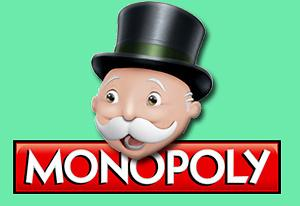

Antes
Un juego creado con la función de servir como herramienta para enseñar las teorias acerca de la justicia social y económia extraídas del estudio titulado Progreso y Miseria de Henry George.

Un juego creado con la función de servir como herramienta para enseñar las teorias acerca de la justicia social y económia extraídas del estudio titulado Progreso y Miseria de Henry George.
Comercializado por vez primera en el año de 1936.
A lo largo de 80 años, el juego a sufrido una notable evolución. Sus múltiples ediciones y sus tantas versiones han dado pie a que se cambiara desde la caja que lo contiene hasta los elementos que lo componen.Logrando así, mantenerse como el favorito a través de las décadas.
Con los años la finalidad del juego cambio para solo disfrutar un buen rato, negociando propiedades y hasta haciendo uso de los medios electronicos para todas las transacciones que requiere el juego
Con información de Graffica.info,cultura visual